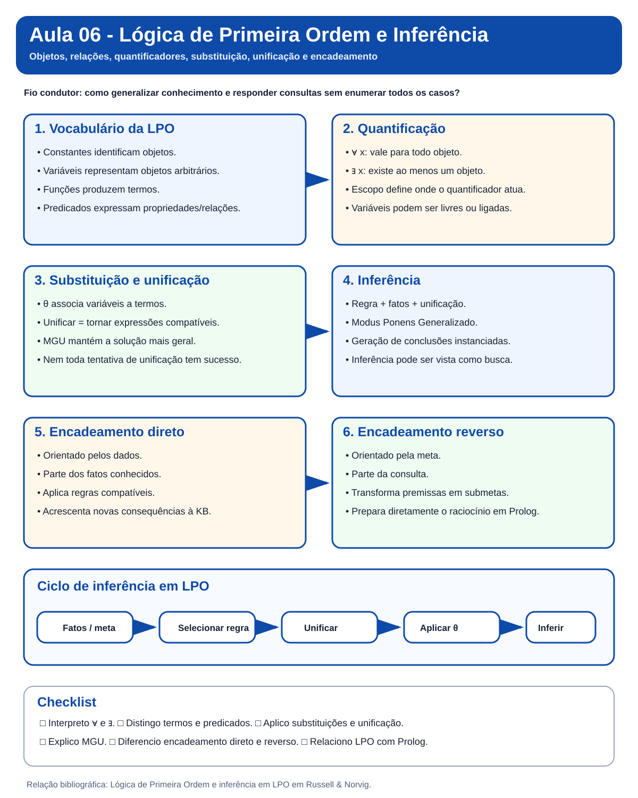

Aula 06 - Lógica de Primeira Ordem e Inferência
Guia visual de revisão. Esta nota dá continuidade à Aula 05. O foco agora é ampliar a capacidade de representação da lógica proposicional e tornar explícitos os mecanismos de inferência usados com variáveis, quantificadores, substituições e unificação.
Nota visual da aula

Visão em 30 segundos
| Pergunta | Ideia-chave |
|---|---|
| Por que a lógica proposicional não basta? | Porque não representa bem objetos, relações e regras gerais sem enumerar muitos símbolos. |
| O que a LPO acrescenta? | Constantes, variáveis, funções, predicados e quantificadores. |
O que faz ∀? |
Expressa que uma sentença vale para todos os objetos do domínio. |
O que faz ∃? |
Expressa que existe ao menos um objeto que satisfaz a sentença. |
| O que é substituição? | Aplicação sistemática de termos a variáveis. |
| O que é unificação? | Procura uma substituição que torne duas expressões compatíveis. |
| O que é MGU? | O unificador mais geral, sem restrições desnecessárias. |
| Como inferir em LPO? | Instanciando sentenças, unificando padrões e aplicando regras de inferência. |
Mapa mental
mindmap
root((LPO e Inferência))
Representação
Constantes
Variáveis
Funções
Predicados
Termos
Quantificação
Universal
Existencial
Escopo
Variáveis livres e ligadas
Inferência
Substituição
Unificação
MGU
Modus Ponens Generalizado
Estratégias
Encadeamento direto
Encadeamento reverso
Resolução em LPO
Continuidade
Agentes baseados em conhecimento
Mundo do Wumpus
Próximo passo: Prolog
1. Pergunta central
Como representar e inferir conhecimento sobre classes de objetos e relações sem enumerar proposições para cada caso?
Na lógica proposicional, poderíamos ter:
Humano_Socrates
Mortal_Socrates
Humano_Platao
Mortal_Platao
Na LPO:
Humano(Socrates)
∀x Humano(x) → Mortal(x)
e então inferimos:
Mortal(Socrates)
2. Vocabulário da LPO
| Elemento | Papel | Exemplo |
|---|---|---|
| constante | identifica um objeto específico | Socrates, A11 |
| variável | representa um objeto arbitrário | x, y |
| função | produz um termo | PaiDe(x) |
| predicado | expressa propriedade ou relação | Humano(x), Adjacente(x,y) |
| termo | designa um objeto | constante, variável ou função |
| sentença | fórmula sem variáveis livres | ∀x Humano(x) → Mortal(x) |
3. Quantificadores
Universal
∀x Humano(x) → Mortal(x)
Leitura: para todo x, se x é humano, então x é mortal.
Existencial
∃x Professor(x) ∧ PesquisaIA(x)
Leitura: existe ao menos um objeto que é professor e pesquisa IA.
Atenção: trocar
→por∧em sentenças universais altera profundamente o significado.
4. Escopo e variáveis
Em:
∀x (Humano(x) → Mortal(x))
x está ligada ao quantificador.
Em:
Humano(x) → Mortal(x)
x está livre.
Uma sentença completa não possui variáveis livres.
5. Do Wumpus proposicional para LPO
Em vez de criar uma regra para cada casa, podemos representar relações de forma geral:
∀x ∀y (Adjacente(x,y) ∧ Poco(y)) → Brisa(x)
Uma única regra passa a representar muitos casos particulares.
6. Instanciação e proposicionalização
A Parte II começa mostrando como sentenças quantificadas podem ser especializadas.
- Instanciação Universal (IU): obtém uma instância de uma sentença universal por substituição adequada.
- Instanciação Existencial (IE): introduz uma nova constante para representar algum objeto que satisfaz a sentença existencial.
Uma possibilidade é proposicionalizar a KB gerando instâncias sem variáveis e então aplicar inferência proposicional. O problema é que isso pode gerar muitas instâncias irrelevantes e, com funções, termos de profundidade crescente.
7. Substituição
Uma substituição associa variáveis a termos.
θ = {x/Socrates}
Aplicando-a a:
Humano(x) → Mortal(x)
obtemos:
Humano(Socrates) → Mortal(Socrates)
8. Unificação
A unificação responde:
Que substituição torna duas expressões iguais?
Exemplo:
Conhece(x, Ada)
Conhece(Tiago, y)
Uma substituição possível:
{x/Tiago, y/Ada}
Falha exemplo:
Conhece(x, Ada)
Conhece(Tiago, Turing)
quando Ada e Turing são constantes distintas na mesma posição.
9. UMG
O Unificador Mais Geral (UMG), também chamado Most General Unifier (MGU), satisfaz as expressões impondo o mínimo de restrições necessário.
Antes de unificar regras diferentes, pode ser necessário padronizar variáveis à parte (standardize apart). A unificação também deve rejeitar associações como x = f(x) pelo teste de ocorrência (occurs check).
10. Modus Ponens Generalizado
Humano(x) → Mortal(x)
Humano(Socrates)
A unificação encontra:
{x/Socrates}
e permite concluir:
Mortal(Socrates)
flowchart LR
R["Regra com variáveis"] --> U["Unificação"]
F["Fato"] --> U
U --> S["Substituição θ"]
S --> C["Conclusão instanciada"]
11. Cláusulas definidas e caso West
Cláusulas definidas têm exatamente um literal positivo e podem ser escritas como fatos ou regras. Elas sustentam os mecanismos de encadeamento trabalhados na aula.
O caso West é o exemplo condutor da Parte II: fatos sobre American(West), Missile(M1), Sells(West,M1,Nono) e Enemy(Nono,America) são combinados com regras para demonstrar Criminal(West).
12. Encadeamento direto
É orientado pelos dados:
fatos conhecidos
→ localizar regras aplicáveis
→ unificar premissas
→ gerar novos fatos
→ repetir
13. Encadeamento reverso
É orientado pela meta:
consulta
→ localizar regra que conclua a meta
→ transformar premissas em submetas
→ tentar provar as submetas
Essa ideia prepara diretamente o estudo de Prolog. Quando há múltiplas alternativas de prova, o procedimento pode usar retrocesso (backtracking), retornando ao último ponto de escolha após uma falha.
14. Comparação
| Aspecto | Encadeamento direto | Encadeamento reverso |
|---|---|---|
| orientação | dados | meta |
| início | fatos conhecidos | consulta |
| expansão | consequências | submetas |
| risco típico | inferências irrelevantes | ciclos/repetição de metas |
| relação com Prolog | indireta | direta |
15. Inferência como busca
flowchart LR
K["KB atual"] --> R["Regra aplicável"]
R --> U["Unificação"]
U --> N["Nova sentença ou submeta"]
N --> K2["Novo estado lógico"]
No encadeamento reverso, cada estado pode ser entendido como um conjunto de submetas ainda não provadas.
16. Resolução em LPO
Como fechamento, a aula apresenta a resolução por refutação em LPO: negar a consulta, converter para FNC, padronizar variáveis, eliminar existenciais por Skolemização, unificar literais complementares e aplicar resolução até obter, quando possível, a cláusula vazia.
O foco da aula permanece em unificação e encadeamento; resolução aparece como fechamento e ponte conceitual.
17. Erros conceituais frequentes
Erro 1:
∀significa "existe um". Não.∀e∃têm semânticas distintas.Erro 2: unificar é substituir qualquer variável por qualquer termo. Não. A substituição precisa ser consistente.
Erro 3: toda unificação tem sucesso. Não. Estruturas ou constantes incompatíveis produzem falha.
Erro 4: encadeamento direto e reverso percorrem o mesmo caminho. Não. Eles exploram o espaço de inferências de maneiras distintas.
Revisão de 1 minuto
LPO e Inferência
├── representação
│ ├── constantes
│ ├── variáveis
│ ├── funções
│ └── predicados
├── quantificadores
│ ├── ∀ universal
│ └── ∃ existencial
├── mecanismos
│ ├── substituição
│ ├── unificação
│ └── MGU
└── inferência
├── Modus Ponens Generalizado
├── encadeamento direto
└── encadeamento reverso
Checklist
- [ ] Diferencio constante, variável, função e predicado.
- [ ] Interpreto
∀e∃. - [ ] Identifico variáveis livres e ligadas.
- [ ] Aplico substituições.
- [ ] Verifico unificações simples.
- [ ] Entendo o papel do UMG/MGU.
- [ ] Diferencio IU e IE.
- [ ] Entendo por que proposicionalizar toda a KB pode ser inviável.
- [ ] Reconheço padronização à parte e teste de ocorrência.
- [ ] Entendo o papel de cláusulas definidas e do caso West.
- [ ] Relaciono encadeamento reverso com retrocesso.
- [ ] Explico o Modus Ponens Generalizado.
- [ ] Diferencio encadeamento direto e reverso.
- [ ] Relaciono inferência em LPO com busca.
- [ ] Entendo a ideia de FNC, Skolemização e resolução em LPO.
- [ ] Entendo por que esse conteúdo prepara Prolog.
Próximo passo: faça o Estudo Guiado 06, explore as visualizações de Unificação e Inferência em LPO, e revise os pseudocódigos da Aula 06.
Referência principal: Russell & Norvig, capítulos sobre Lógica de Primeira Ordem e inferência em LPO.